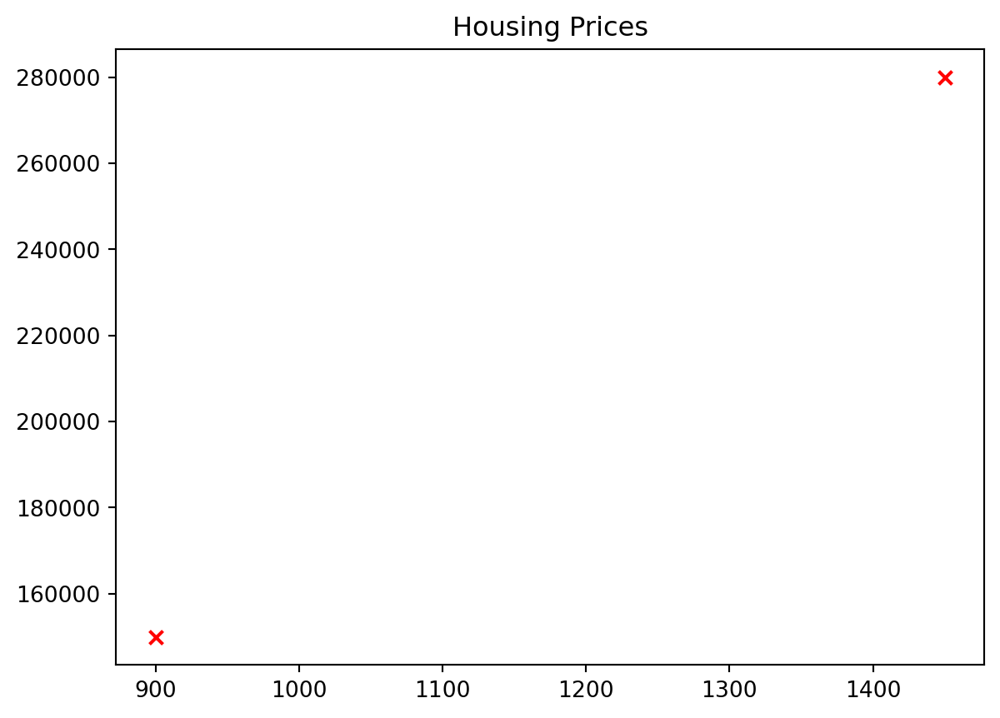

flowchart LR A(Input features) --> B(Regression model) B --> C(Predicted value)
What is Machine Learning?
In today’s world, hearing about Artificial Intelligence (AI) in a daily conversation is not uncommon. We hear about it everywhere and everyone wants to talk about it, even if they have no real clue of how it works or what it really is. Some even say it will take over humanity very soon 👀.
There is another field that is unlikely to hear in daily conversations, but which is very tightly related to AI: Machine Learning (ML). There are many different definitions of what machine learning is, but let’s look at the following one to keep it simple:
“Field of study that gives computers the ability to learn without being explicitly programmed” - Arthur Samuel (1959).
That is a very informal definition. Briefly, machine learning is the process in which a computer learns how to do a task or how to solve a problem. The rules have not been explicitly programmed by the human, instead found by the machine during its training process.
Types of Machine Learning
There are three main types of ML, which we briefly explain below:
- Supervised learning: the machine learns from a given dataset that contains the right answers, thus the name ‘supervised’.
- Unsupervised learning: The machine doesn’t know anything about the expected output, but tries to learn/find patterns in the data that can be later used to solve a task. Some example algorithms are:
- Clustering
- Anomaly Detection
- Dimensionality reduction
- Reinforcement learning: The machine learns by trial and error. Good examples for this are games, that a computer learns how to play by trial and error until it becomes very good at it.
Regression vs classification
Also, is important to differenciate a regression model from a classification model:
- Regression model: Predicts values, such as house prices or temperature. These values are numbers like $250,000.00, 23.7 °C, etc. Infinitely many possible outputs.
- Classification model: predicts classes or categories, such as a picture representing a “cat” or a “dog”. Discrete or finite set of possible outputs.
flowchart LR A(Input image) --> B(Classification model) B --> C(Class 1) B --> D(Class 2)
Terminology
- Training dataset: Data used to train the model, i.e., fed to the algorithm for it to learn the rules to predict the outputs.
- Validation dataset: Used to validate the trained model and evaluate the accuracy of prediction. It helps determine if the model is good at predicting outputs from unseen data. If not, more training is required, or a bigger training data.
- Test dataset: Data used to test the model after trained and validated, to confirm real accuracy of model.
DeepLearning.AI - Machine Learning Specialization
Sometimes validation dataset and test dataset are used as one.
Do you know a learning algorithm?
Linear regression
I’m sure you have heard about linear regression, a very simple algorithm that fits a straight line to a given data. This algorithm belongs to supervised learning, since it uses available data to fit the line, which then can be used to predict a value (even though not very accurate). Mathematically, this algorithm is as simple as below:
\[ f_{w,b}(x) = wx+b \]
So yes, you know at least one learning algorithm, and it is very simple!
Example
We have the prices for two houses: a small one (900 sqft) and a big one (1,450 sqft). The small one costs $150,000.00 and the big one $280,000.00. We would like to predict the price of a medium size house (1,050 sqft).
import numpy as np
import matplotlib.pyplot as plt
x = [900, 1450]
y = [150000, 280000]
fig, ax = plt.subplots()
plt.title("Housing Prices")
plt.scatter(x, y, marker='x', c='r')
plt.show()
Conclusions
We learned some very basic terminology and gave a brief introduction of what machine learning is. Good start!